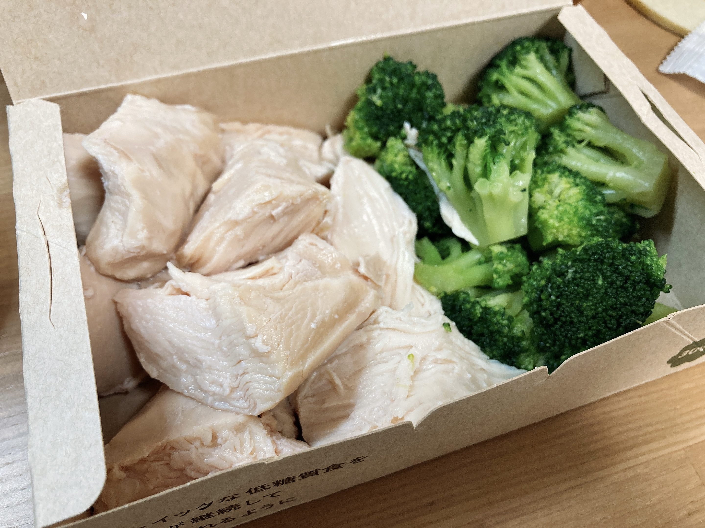

やっぱり鶏肉は素晴らしかった2
疲れで夕飯準備が面倒になってしまって、またうーばーいーちゅしてしまうという。

また鶏肉です。自炊で鶏肉を調理したことのある人ならわかる、企業様の課金があって初めて実現する絶妙なぷりっぷり加減。これまた絶妙な柔らかさのブロッコリー。蒸し鶏くらい自分で作れよって思うじゃないですか？違うんです。蒸し鶏を自分で調理しうる人間だからこそわかる価値、自力での再現不可能さがここにはあります。宅配オンリーなのが本当に勿体ない、店頭で買えるなら毎日通ってる。
野菜と鶏肉って、体が癒される感じがしていいですね。炭水化物ばっかり食べてるとこういう食事も取りたくなります。
久しぶりに譜面紹介でもしようかなと。今日は🍳のイチオシ、通称「わしゃわしゃアーク」を紹介します。
自分が一番最初に遭遇したのはParty Vinylの中盤。

声ネタに合わせてそれまで大人しかったアークが2本同時にわしゃわしゃし始めます。これが取っててすごくたのしい。しかも、見た目の派手さによらず、さほど苦労することなく繋がるというやさしい仕様。ノリノリな曲でこれが出てくるとにこにこできます。
わしゃわしゃアークが登場する譜面をすべて把握できているわけではないんですけど、最近増えたのでいうとQuon(DJ Noriken)のFTRですかね。まだBYD解禁できてない。FTR見てる限りは、あのexpの同時押しトリルって一体いつ降ってきたっけ……というのがわからなくなるくらい平和な譜面をしてますね。

これも声ネタに合わせて降ってきます。この曲声ネタ多すぎてどこか伝わらないけど。短いけど何回か降ってきてくれてよさ。